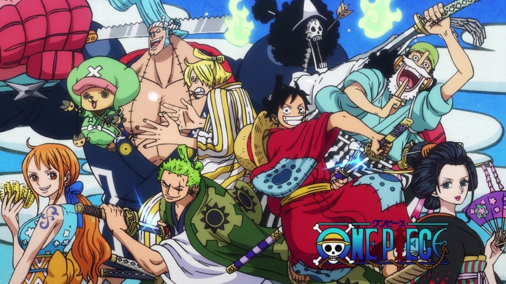

Danny Phantom é uma série de desenho animado estadunidense-canadense, criada por Butch Hartman e produzida pela Billionfold Studios e Nelvana exibida originalmente no dia 3 de abril de 2004, e teve sua última exibição no ano de 2007. O show gira em torno das aventuras de Danny Phantom, um garoto que após um acidente no laboratório de seus pais ganhou o dom de poder se transformar em um fantasma e combater as ameaças que vem a sua cidade.
2004/2007
One piece

One Piece é uma série de mangá escrita e ilustrada por Eiichiro Oda. Os capítulos têm sido serializados na revista Weekly Shōnen Jump desde 22 de julho de 1997, com os capítulos compilados e publicados em 99 volumes tankōbon pela editora Shueisha até fevereiro de 2021. One Piece conta as aventuras de Monkey D. Luffy, um jovem cujo corpo ganhou as propriedades de borracha após ter comido uma fruta do diabo acidentalmente. Com sua tripulação, os Piratas do Chapéu de Palha, Luffy explora a Grand Line em busca do tesouro mais procurado do mundo, o "One Piece", a fim de se tornar o próximo Rei dos Piratas.
1997/Atualmente
Coragem, o cão covarde
Coragem é um cachorro que vive em uma fazenda distante onde acontecem aparições de monstros, fantasmas e outras criaturas. O animal está sempre defendendo e salvando seus donos idosos de eventos misteriosos.
1999/2002
Power Rangers
Power Rangers é uma franquia americana de entretenimento e merchandising construída em torno de uma série de televisão em live-action de super-heróis baseada na franquia japonesa Tokusatsu Super Sentai.
1998/2018
Forrest Gump
Mesmo com o raciocínio lento, Forrest Gump nunca se sentiu desfavorecido. Graças ao apoio da mãe, ele teve uma vida normal. Seja no campo de futebol como um astro do esporte, lutando no Vietnã ou como capitão de um barco de pesca de camarão, Forrest inspira a todos com seu otimismo. Mas a pessoa que Forrest mais ama pode ser a mais difícil de salvar: seu amor de infância, a doce e perturbada Jenny.
1994
De volta para o futuro
Marty McFly, um adolescente de uma pequena cidade californiana, é transportado para a década de 1950 quando a experiência do excêntrico cientista Doc Brown dá errado. Viajando no tempo em um carro modificado, Marty conhece versões jovens de seus pais e precisa fazer com que eles se apaixonem, ou então ele deixará de existir. Para complicar, Marty precisa voltar para casa a tempo de salvar o cientista.